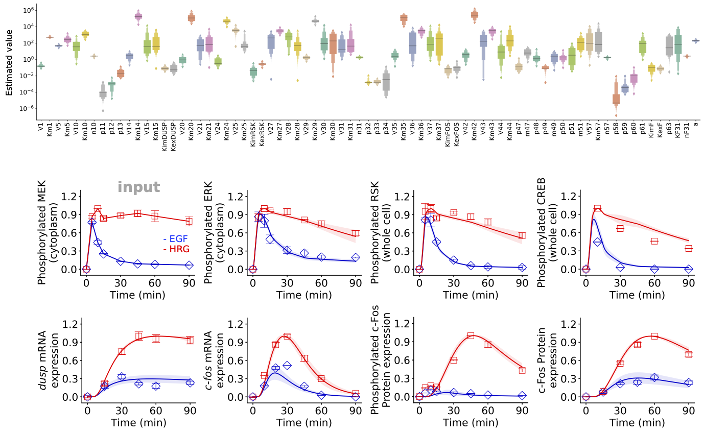
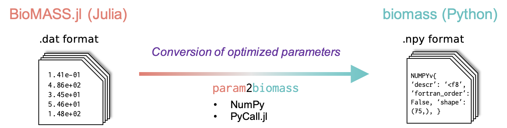

Parameter Estimation

Core functions
Model(path_to_model::String)
Load a BioMASS model. The model must include the following files:
| Name | Content |
|---|---|
name2idx/ | Names of model parameters and species |
ode.jl | Differential equation, parameters and initial condition |
observalbe.jl | Model observables for correlating simulation results with experimental observations |
simulation.jl | Simulation condition |
experimental_data.jl | Experimental measurements |
search_param.jl | Lower and upper bounds of model parameters to be estimated |
problem.jl | An objective function to be minimized, i.e., the distance between model simulation and experimental data |
Parameters
path_to_model::String- The model folder to read.
Returns
model::Model- The executable model in BioMASS.
optimize(model::Model, index_of_parameter_set::Int; popsize::Int=5, max_generation::Int=10000, allowable_error::Float64=0.0, n_children::Int=50, local_search_method::String="mutation")
Find a parameter set that reproduces experimental observations.
Parameters
model::Model- The BioMASS model object.
index_of_parameter_set::Int- Index of parameter sets.
popsize::Int (default: 5)- A multiplier for setting the total population size. The population has popsize * len(search_param) individuals.
max_generation::Int (default: 10000)- The maximum number of generations over which the entire population is evolved.
initial_threshold::Float64 (default: 1e12)- Allowable error used to generate initial population. Default value is 1e12 (numerically solvable).
allowable_error::Float64 (default: 0.0)- Optimization stops when Best Fitness <= allowable_error.
n_children::Int (default: 50)- The number of children used for local search NDM/MGG ("mutation").
maxiter::Int (default: 100)- The maximum number of iterations over which the entire population is evolved. This is used for the local search methods: "Powell", "DE" or "CMAES".
local_search_method::String (default:"mutation")- Local search method used in GA. Should be one of
"mutation": NDM/MGG"Powell": Modified Powell method"DE": Differential Evolution (strategy:best2bin)"CMAES": The CMA Evolution Strategy
- Local search method used in GA. Should be one of
run_simulation(model::Model, viz_type::String, show_all::Bool=false, stdev::Bool=false)
Save simulation results with optimized parameter values.
Parameters
viz_type::String"average""best""original""experiment"
show_all::Bool (default:false)- Whether to show all simulation results.
stdev::Bool (default:false)- If True, the standard deviation of simulated values will be shown (only available for
"average"visualization type).
- If True, the standard deviation of simulated values will be shown (only available for
save_format::String (default:"pdf")- Either "png" or "pdf", indicating whether to save figures as png or pdf format.
param2biomass(path_to_model::String)
Convert optimized parameters (fitparam/) and optimization process (logs/) into BioMASS format (out/).
Parameters
path_to_model::String- The model folder including optimization results.
Estimate unknown model parameters
using BioMASS
model = Model("./examples/fos_model")
optimize(model, 1, popsize=3, allowable_error=0.35, local_search_method="DE")Simultaneous parameter optimization
Using module Distributed
using Distributed
addprocs(); # add worker processes
@everywhere using BioMASS
@everywhere begin
model = Model("./examples/fos_model")
function optimize_parallel(i)
optimize(model, 1, popsize=3, allowable_error=0.35, local_search_method="DE")
end
end
pmap(optimize_parallel, 1:10)Calling multiple bash scripts
- main.jl
using BioMASS
model = Model("./examples/fos_model")
if abspath(PROGRAM_FILE) == @__FILE__
optimize(
model,
parse(Int64, ARGS[1]),
max_generation=50,
allowable_error=0.35,
popsize=3,
local_search_method="CMAES",
maxiter=1000,
)
end- optimize_parallel.sh
#!/bin/sh
for i in $(seq 1 10); do
nohup julia -t 4 main.jl $i >> errout/$i.log 2>&1 &
done
# The number of execution threads is controlled by using the -t command line argument (local_search_method == "CMAES").
# To terminate the process,
# $ pgrep -f main.jl | xargs kill -9Run optimize_parallel.sh
$ mkdir errout
$ sh optimize_parallel.shHow to track optimization process
The temporary result will be saved in path_to_model/logs/n.log after each iteration.
$ tail examples/fos_model/logs/1.logVisualization of simulation results
The simulation results will be saved in figure/.
run_simulation(model, viz_type="best", show_all=true)Conversion of optimized parameters into BioMASS format

The converted items will be saved in path2model/dat2npy/out/.
param2biomass("./examples/fos_model")